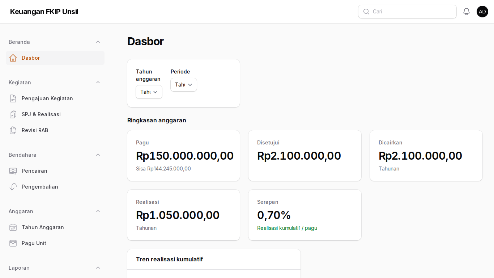
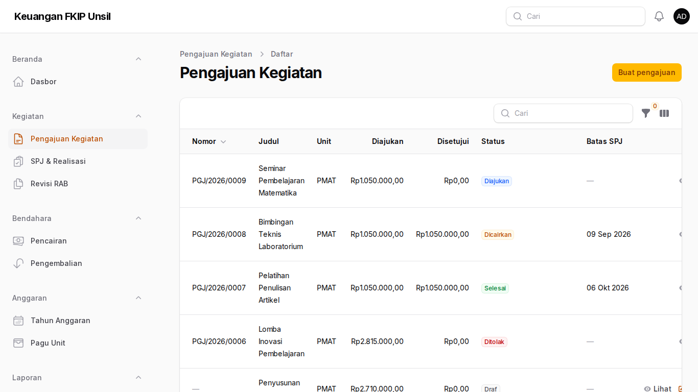
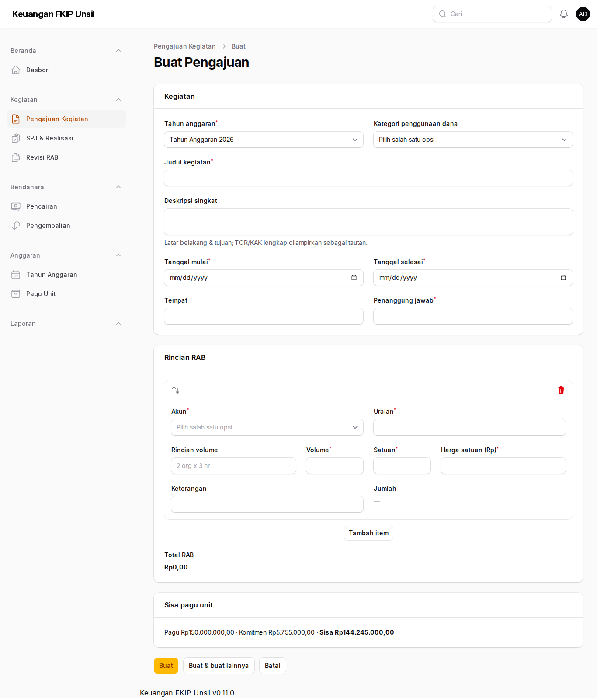
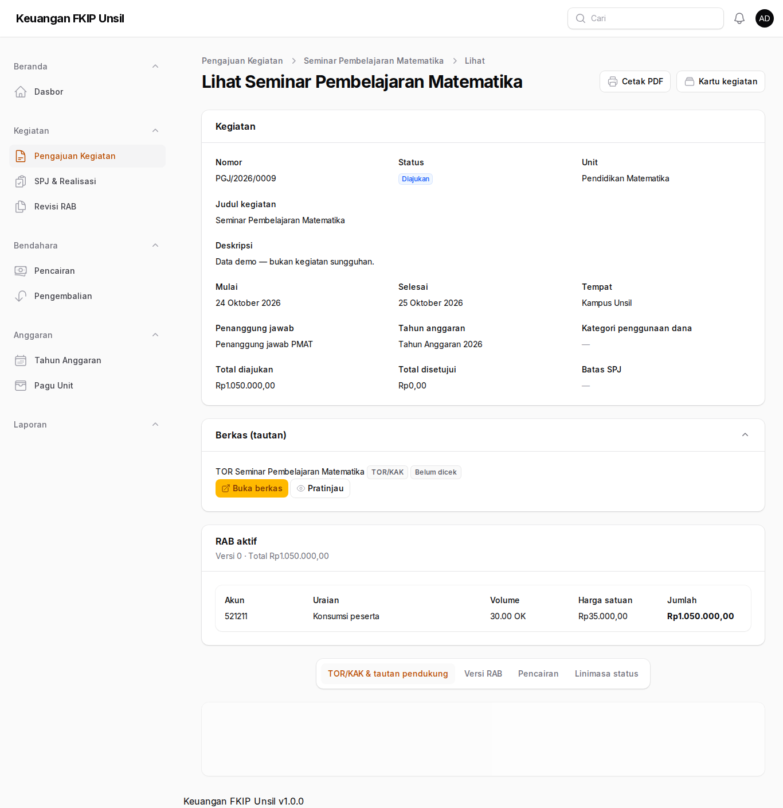
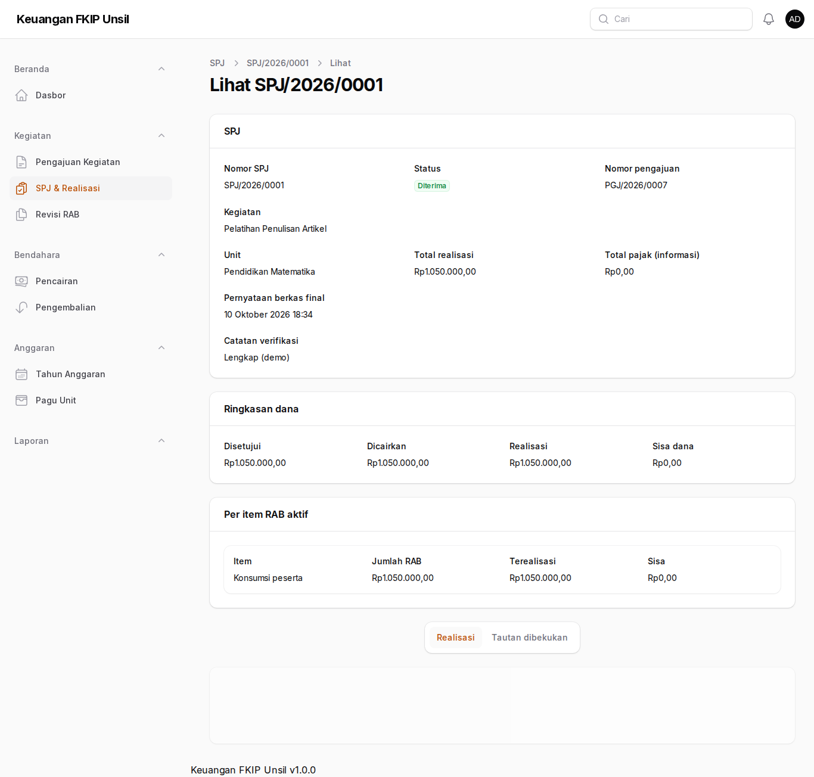
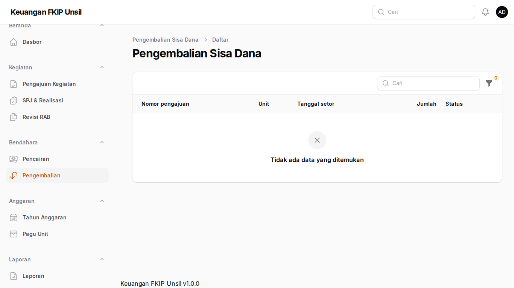
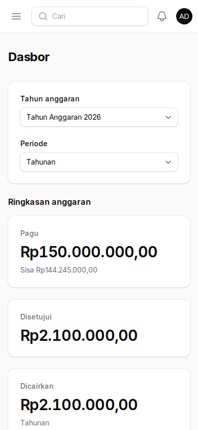
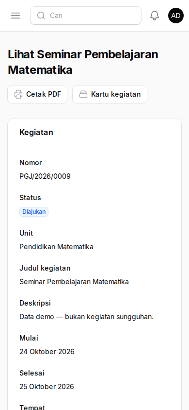
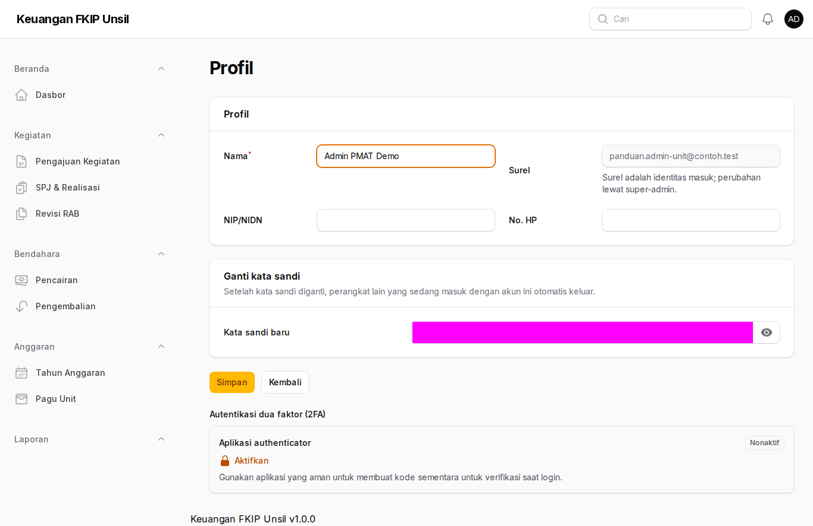

Panduan Admin Prodi/Unit
Peran: admin-unit
Tujuan peran
Menyusun pengajuan kegiatan beserta RAB, mencatat realisasi dan bukti, mengajukan SPJ, serta menyetor sisa dana — hanya untuk unit Anda.
Cara masuk
- Buka halaman masuk aplikasi (alamat https://supportfkip.unsil.ac.id/keuangan/panel).
- Isi Alamat email dan Kata sandi akun Anda, lalu klik Masuk.
Langkah-langkah
Melihat sisa pagu
Buka Beranda → Dasbor. Kartu Ringkasan anggaran menampilkan pagu, dana disetujui, dicairkan, realisasi, dan serapan unit Anda.

Melihat sisa pagu Daftar pengajuan
Buka Kegiatan → Pengajuan Kegiatan. Saring menurut tahun atau status; klik baris untuk melihat rincian.

Daftar pengajuan Membuat pengajuan
Klik Buat. Isi data kegiatan, lalu tambah item RAB (akun, uraian, volume, satuan, harga satuan). Jumlah dan total dihitung otomatis dan ringkasan sisa pagu tampil di bawahnya. Klik Simpan (status Draf).

Membuat pengajuan Tautan TOR & mengajukan
Pada rincian pengajuan, buka TOR/KAK & tautan pendukung → Tambah tautan dan tempel tautan TOR. Lalu klik Ajukan: nomor PGJ/<tahun>/<urut> terbit dan pengajuan terkunci. Setelah dicairkan, tombol Susun SPJ muncul.

Tautan TOR & mengajukan Realisasi & SPJ
Di halaman SPJ, tambah Realisasi per item RAB beserta tautan kuitansi/nota/faktur (centang akses terbatas). Pajak dicatat lewat tombol Pajak dengan nilai sesuai bukti potong. Klik Ajukan SPJ dan centang pernyataan berkas final.

Realisasi & SPJ Menyetor sisa dana
Setelah SPJ diterima dan masih ada sisa, buka pengajuan → Catat pengembalian sisa dana (tanggal, jumlah, nomor bukti setor, tautan bukti setor). Pantau statusnya di Bendahara → Pengembalian.

Menyetor sisa dana Di ponsel: dasbor
Aplikasi dapat dibuka dari peramban ponsel. Menu tersedia di tombol ☰ kiri atas.

Di ponsel: dasbor Di ponsel: rincian pengajuan
Rincian pengajuan dan tombol aksi tampil bertumpuk; tautan bukti dari aplikasi Google Drive dapat langsung ditempel.

Di ponsel: rincian pengajuan
Menyimpan bukti di Google Drive
Aplikasi tidak menerima unggahan berkas. Simpan bukti di Google Drive, lalu tempel tautannya.
- Simpan berkas di Shared Drive unit/fakultas (bukan Drive pribadi) agar tidak hilang saat pegawai pindah.
- Klik kanan berkas → Bagikan → Akses umum → pilih Terbatas atau Universitas Siliwangi. Jangan pilih “Siapa saja yang memiliki link” untuk kuitansi, nota, faktur, bukti transfer, dan bukti setor.
- Klik Salin link, tempel di isian Tautan (URL), dan untuk bukti keuangan centang konfirmasi akses terbatas.
- Dari ponsel: foto nota → simpan ke folder Shared Drive unit → ketuk ⋮ → Bagikan → Setelan akses → Terbatas/Universitas Siliwangi → ketuk ⋮ → Salin link → tempel di aplikasi melalui peramban ponsel.
Tautan ditolak bila memakai http://, pemendek (bit.ly, s.id), tautan folder Drive, atau domain di luar daftar (mis. dropbox.com).
Profil dan kata sandi
Buka menu pengguna di pojok kanan atas, lalu pilih Profil. Di sana Anda dapat mengubah nama, NIP, dan nomor HP, serta mengganti kata sandi (masukkan kata sandi sekarang, lalu kata sandi baru dua kali).

- Setelah kata sandi diganti, perangkat lain yang sedang masuk dengan akun Anda otomatis keluar.
- Bila administrator menandai akun Anda wajib ganti kata sandi, Anda hanya dapat membuka halaman Profil sampai kata sandi diganti.
- Surel adalah identitas masuk dan hanya dapat diubah oleh administrator.
Tanya-jawab
- Mengapa realisasi bulan lalu ditolak?
- Periode bulan itu sudah dikunci. Hubungi admin keuangan.
- Muncul lencana “Akses publik” pada bukti?
- Ubah setelan berbagi berkas di Drive menjadi Terbatas/Universitas Siliwangi.
- Pengajuan ditolak karena pagu?
- Total melebihi sisa pagu unit; kurangi item atau tunggu pagu disesuaikan.
Kontak
Admin Keuangan FKIP (keuangan-fkip@unsil.ac.id) · Admin TI Fakultas untuk akun & MFA.